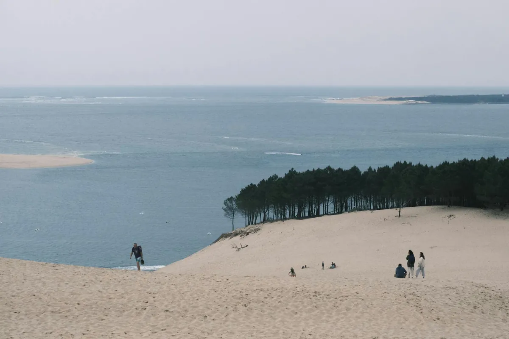
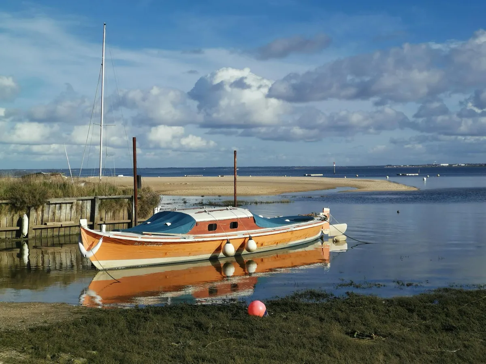

Soin nominatif
Chaque article est enregistré, identifié et suivi de son arrivée à sa restitution. Aucune pièce n'est jamais mélangée avec celle d'un autre client.
Maison Paliquey est née d'une conviction simple : le linge mérite du soin, de l'attention et du temps. Pas d'industrie, pas de compromis — juste un savoir-faire transmis, au service du quotidien et des moments d'exception.
Installée au cœur de Lège-Cap-Ferret, Maison Paliquey (SAS LAVOK) est au service des habitants, des résidents secondaires et des professionnels du tourisme du Bassin d'Arcachon.
Nous avons fait le choix d'une blanchisserie à taille humaine, où chaque pièce est identifiée, chaque demande écoutée, et chaque client reçu comme un voisin. Ce n'est pas une promesse marketing — c'est la seule manière de travailler qui nous ressemble.

Chaque article est enregistré, identifié et suivi de son arrivée à sa restitution. Aucune pièce n'est jamais mélangée avec celle d'un autre client.
48 h en standard, 24 h en express quand c'est possible. En haute saison, nous anticipons et nous organisons — jamais nous ne promettons ce que nous ne pouvons pas tenir.
Nous sommes du Cap Ferret, et nous travaillons pour ceux qui y vivent ou y passent. Nos partenaires pressing sont sélectionnés pour leur sérieux et leur proximité.
Résidents permanents qui nous confient le linge du quotidien, vacanciers qui louent draps et serviettes pour leur séjour, hôteliers qui nous confient des centaines de pièces chaque semaine : chacun trouve chez nous la même attention, le même soin, la même fiabilité.
Nous ne faisons pas deux métiers — nous faisons un seul métier, bien fait, pour tous nos clients.
Faire appel à nous →
Parce qu'une relation de confiance commence par une rencontre.